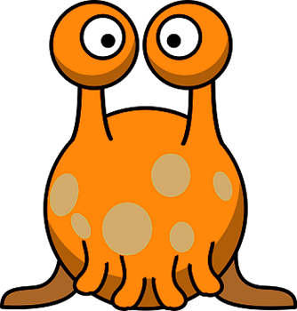
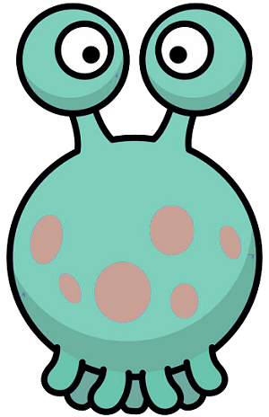

<!DOCTYPE html>
<html>
  <head>
    <title>Alien lost and found game</title>
    <script src="jspsych-6.1.0/jspsych.js"></script>
    <script src="jspsych-6.1.0/plugins/jspsych-html-button-response.js"></script>
    <script src="jspsych-6.1.0/plugins/jspsych-survey-text.js"></script>
    <script src="jspsych-6.1.0/plugins/jspsych-external-html.js"></script>
	<script src="https://www.google.com/recaptcha/api.js" async defer></script>
    <script src="consent/consent.js"></script>
    <script src="https://ajax.googleapis.com/ajax/libs/jquery/3.4.1/jquery.min.js"></script>
    <script src="data-anonymizer.js"></script>
    <link rel="stylesheet" href="jspsych-6.1.0/css/jspsych.css"></link>
    <script src="mmturkey-0.6.js"></script>
  </head>
  <body></body>

  <script>

  	/* get info from turk */
  	var turkInfo = jsPsych.turk.turkInfo();

  	// anonymizer for worker IDs
    var a = new DataAnonymizer();

    /* create timeline */
    var timeline = [];

    // objects
    var objects = jsPsych.randomization.repeat(['simple', 'complex'], 1)
    var obj_1 = objects[0]
    var obj_2 = objects[1]
    console.log(objects)

    var utts = jsPsych.randomization.repeat(["complex_utt", "simple_utt"], 1)
    var utt_1 = utts[0]
    var utt_2 = utts[1]
    console.log(utts)
    
    //box_type = box_type[0][0].substr(0, box_type[0][0].indexOf('/'))

    function get_utt(utt_type) {
      if (utt_type == "simple_utt") {
        return("<i>\"Bado mep.\"</i>")
      } else {
        return("<i>\"Toba zem zorp bidaku midu osh gipu.\"</i>")
      }
    } 

    // reCAPTCHA object
    
    var recaptcha = {
    	type: "external-html",
    	url: "recaptcha.html",
    	cont_btn: "submit_button",
    	execute_script: true
    };
    timeline.push(recaptcha);
  

    var consent = {
      type:'external-html',
      url: "consent/consent.html",
      cont_btn: "start"
    };
    timeline.push(consent);
    
    
    /* define instructions trial */
    var instructions = {
      type: "html-button-response",
      stimulus: "<p>In this experiment, you will see some aliens talk " +
      "and make judgments about what they are talking about.",
      choices: ['Start'],
      data: {test_part: 'setup'},
      post_trial_gap: 2000
    };
    timeline.push(instructions);

    var intro = {
      type: 'html-button-response',
      stimulus: "<p>You work at an alien lost and found." +
      '<br><br>Here is a box of lost objects.</i><br>' +
      "<div style='width: 700px;'>"+
      "<div style='float: center;'></img></div>" +
      "</div><br>",
      choices: ['Continue'],
      data: {test_part: 'setup'},
      post_trial_gap: 500
    }

    var show_aliens = {
      type: 'html-button-response',
      stimulus: function() { return "<p>Two aliens come in, and each look into the box<br>" +
        "<div style='width: 700px;'>" +
        "<div style='float: left;'></img></div>" +
        "<div style='float: right;'></img></div>"+
        "<br><div style='float: center;'></img></div>" +
        "</div><br>";
      },
      choices: ['Continue'],
      data: {test_part: 'setup'},
      post_trial_gap: 500
    }

    var alien_talk1 = {
      type: 'html-button-response',
      stimulus: function() { return "<p>Both aliens say which object they lost.</p>" +
        "<p>This one says, " + get_utt(utt_1) + "</p>" +
        "<div style='width: 700px;'>" +
        "<div style='float: left;'></img></div><br><br>"+
        "<div style='float: center;'></img></div>" +
        "</div><br>";
      },
      choices: ['Continue'],
      data: {test_part: 'setup', utt: utt_1},
      post_trial_gap: 500
    }

    var alien_talk2 = {
      type: 'html-button-response',
      stimulus: function(){ return "<p>The other one says, " + get_utt(utt_2) + "</p>" +
        "<div style='width: 700px;'>"+
        "<div style='float: right;'></img></div><br><br>"+
        "<div style='float: center;'></img></div>" +
        "</div><br>";
      },
      choices: ['Continue'],
      data: {test_part: 'setup', utt: utt_2},
      post_trial_gap: 500
    }

    var test_1 = {
      type: 'html-button-response',
      stimulus: function(){ return "<p>Which object did this alien lose? Remember, they said,</p>" +
        "<p>" + get_utt(utt_1) + "</p>" +
        "<div style='width: 700px;'>"+
        "<div style='float: center;'></img></div><br><br>"+
        "</div>";
      },
      choices: [obj_1, obj_2],
      post_trial_gap: 500,
      data: {utt: utt_1, obj_1: obj_1, obj_2: obj_2, test_part: "obj_selection"},
      button_html: '<button style="border:none; background-color:#ffffff">  </img> </button>'
    }

    var test_2 = {
      type: 'html-button-response',
      stimulus: function(){ return "<p>Which object did this alien lose? Remember, they said,</p>" +
        "<p>" + get_utt(utt_2) + "</p>" +
        "<div style='width: 700px;'>"+
        "<div style='float: center;'></img></div><br><br>"+
        "</div>";
      },
      choices: [obj_1, obj_2],
      post_trial_gap: 500,
      data: {utt: utt_2, obj_1: obj_1, obj_2: obj_2, test_part: "obj_selection"},
      button_html: '<button style="border:none; background-color:#ffffff">  </img> </button>',
      margin_horizontal: '20px'
    }

    var test_procedure = {
      timeline: [intro, show_aliens, alien_talk1, alien_talk2, test_1, test_2],
      sample: {
        type: 'without-replacement',
        size: 1
      }
    }
    timeline.push(test_procedure);

    var comment_trial = {
  		type: 'survey-text',
  		questions: [
    		{prompt: "Briefly, why did you choose the objects you chose?"}
  		],
  		data: {test_part: 'comment'}
	   }
	   timeline.push(comment_trial);

    function saveData(name, data) {
    	var xhr = new XMLHttpRequest();
  		xhr.open('POST', 'write_data.php'); 
  		xhr.setRequestHeader('Content-Type', 'application/json');
  		xhr.send(JSON.stringify({filename: name, filedata: data}));
	   }

	var endscreen = {
		type: 'html-button-response',
		stimulus: "<p>This is the end of the study. Thank you for participating!</p>",
		choices: ['Finish']
	};

	timeline.push(endscreen);

	/* start the experiment */
  jsPsych.init({
    timeline: timeline,
    on_finish: function() {
     if (turkInfo.outsideTurk) {
       var file_name = a.anonymize("test_data")
     } else {
       var file_name = a.anonymize("data_data_data")
     }
     saveData(file_name, jsPsych.data.get().csv());
     turk.submit(jsPsych.data.get().csv());
   }
 });
</script>
</html>
